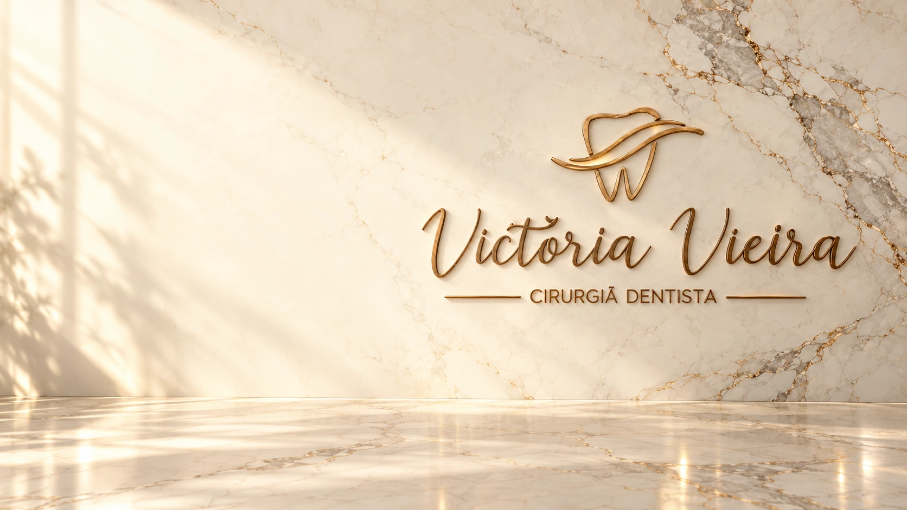
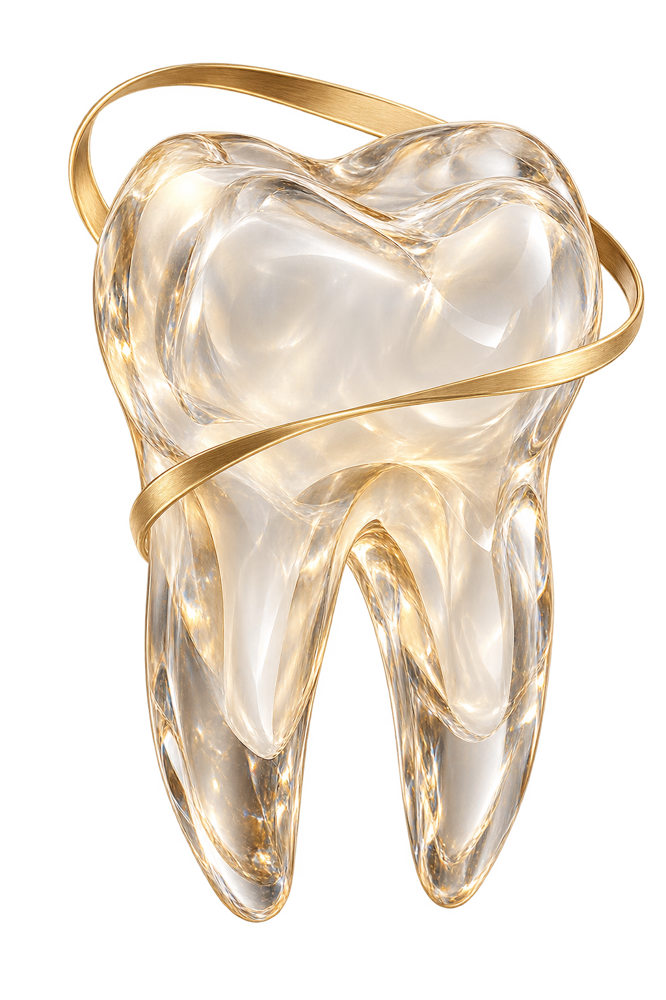

Odontologia em Tramandaí
O cuidado começa pela conversa.
Odontologia estética e humanizada, no Centro de Tramandaí. Conheça os cuidados e prepare suas perguntas para a primeira visita.
Rua Sahydi Abrahão, 175 · sala 06Centro, Tramandaí · RS
Antes de vir
Sua primeira visita, com as dúvidas em ordem.
Você não precisa escolher um tratamento pelo site. Comece pelo que deseja conversar e confirme as condições diretamente com o consultório.
Ver o roteiro da primeira visita- Conte o que você procura.
Uma avaliação de rotina, uma dúvida estética ou um cuidado específico: organize suas perguntas para a conversa.
- Confirme antes de combinar.
Consulte a disponibilidade, o valor da consulta e os documentos necessários antes de confirmar o atendimento.
- Encontre o caminho.
Estamos no Centro de Tramandaí, na Rua Sahydi Abrahão, 175, sala 06. Confirme o horário antes de vir.
Conheça os cuidados. Converse sobre o seu caso.
Conheça os cuidados em estética, ortodontia e endodontia. Escolha um assunto para entender o próximo passo.

Estética e clareamento
Cuidado estético começa com avaliação e informação. Converse sobre objetivos, alternativas e indicação individual.
O que posso perguntar?
Qual é o objetivo no meu caso? Como funcionam as etapas, os cuidados e as condições?

Ortodontia
Alinhamento, função e acompanhamento. Conheça os assuntos que ajudam a organizar sua avaliação.
O que posso perguntar?
Qual é o objetivo no meu caso? Como funcionam as etapas, os cuidados e as condições?

Tratamento de canal
Um olhar para o interior do dente. Entenda o tratamento de canal e a continuidade do cuidado.
O que posso perguntar?
Qual é o objetivo no meu caso? Como funcionam as etapas, os cuidados e as condições?
O consultório
Victória Vieira.
Em Tramandaí.
Clínica, estética, ortodontia e endodontia para conversar sobre a sua saúde bucal. A indicação de cada cuidado depende da avaliação profissional.
Conhecer o consultório e sua identidadeUma conversa para começar.
Consulte os canais do consultório para esclarecer suas dúvidas e verificar a disponibilidade de atendimento.
Escolher meu canal de contatoAntes de entrar em contato.
Algumas respostas para começar a conversa com o consultório.
Prepare sua visitaComo consultar um horário?
Preciso escolher um tratamento pelo site?
Onde encontro valores e condições?
Vamos conversar sobre o seu cuidado?
Consulte a disponibilidade e esclareça as condições de atendimento com o consultório.